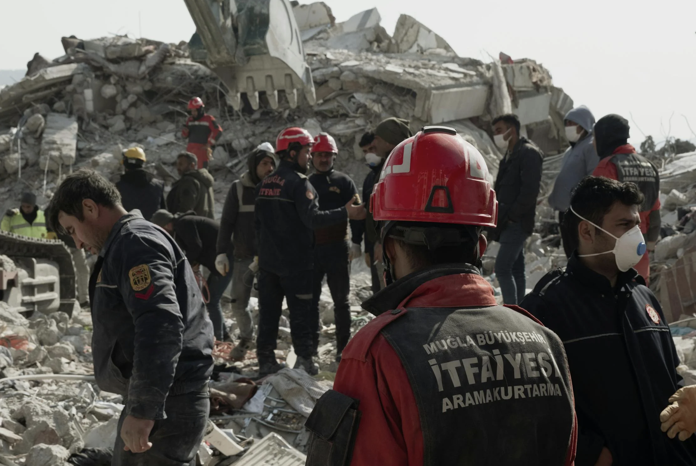

Toplumu Güçlendirmek İçin Bilinçli Ol!
Afet Farkındalık Platformu, bireylerin ve gönüllülerin afetlere karşı bilinçlenmesini sağlamak amacıyla kurulmuştur. Eğitimler, saha çalışmaları ve dijital kaynaklarla herkesin erişebileceği bir bilgi ağı sunar.
Öne Çıkan Noktalar
- Ücretsiz afet farkındalık eğitimleri
- Gönüllü topluluk desteği
- Online içerik ve tatbikat duyuruları